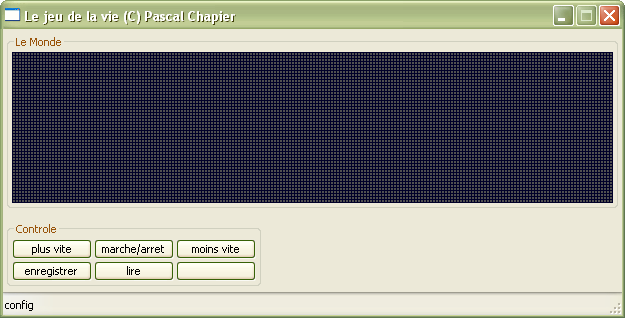
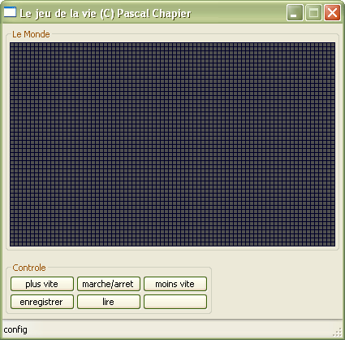
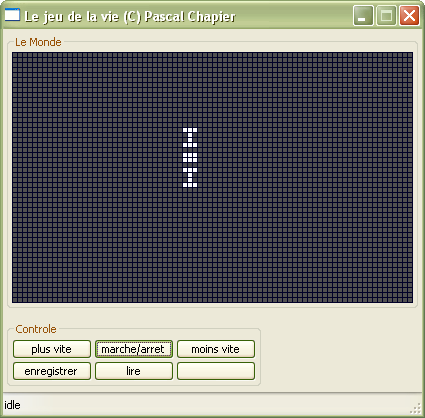
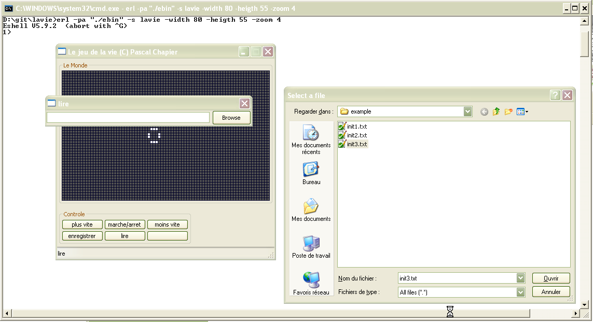

| Overview |  |
Copyright © 2013 Pascal Chapier
Version: 0.1.0
Authors: Pascal Chapier (pascalchap@gmail.com).
Le jeu de la vie est une simulation dans un espace 2D du comportement de "cellules" dont la naissance et la mort sont régies par des règles simples liées à leur voisinage. Cette implémentation simule un monde torique de NxM cases, avec par défaut les règles de base suivantes
lancement de l'application avec une taille par défaut (200x50 zoom 2) ou paramétrée par les flags -width nombre, -height nombre -zoom nombre
le bouton marche/arret permet de démarrer/passer en standby
click gauche pour créer/tuer une cellule
click droit (en mode standby) pour faire du pas a pas
click milieu pour revenir en config puis tuer toutes les cellules
Le bouton plus vite réduit la période de 20%,
le bouton moins vite augmente la période de 20%.
le bouton ecrire permet de sauvegarder le monde courrant dans un fichier (en standby uniquement, choix du fichier dans une popup)
le bouton lire permet de charger un fichier dans le monde courant (en standby uniquement, choix du fichier dans une popup)
syntaxe du fichier de sauvegarde
[
{{X1,Y1},0},
{{X2,Y2},0},
...,
{{Xn,Yn},0}
].
Xi et Yi sont les coordonées des cellules vivantes qui seront ajoutées. Si il y a déja une cellule, pas d'effet; si Xi (ou Yi) est supérieur a la dimension du monde D (d), la valeur est ramenée a Xi modulo D (Yi modulo d): ca fait autant de tours que nécessaire.



Generated by EDoc, Nov 30 2013, 14:52:54.